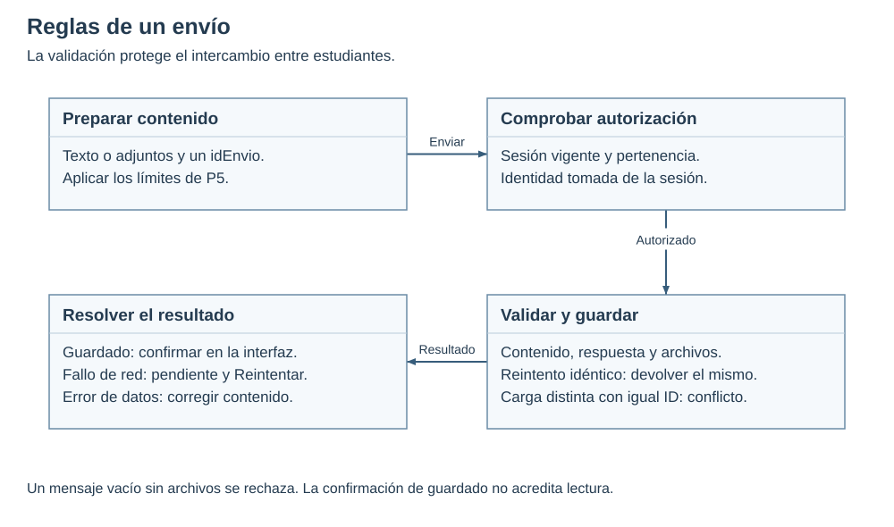

Paso 5 de 12 · Especificación de requisitos
Las reglas del chat
Qué datos se aceptan y cómo se comprobará el funcionamiento.
Datos de acceso
Estas reglas delimitan el intercambio entre estudiantes. Su validación debe realizarse también en el servidor; cambiar un campo en el navegador no concede permisos.
| Dato | Regla |
|---|---|
| Nombre completo | De 2 a 120 caracteres. |
| Código de estudiante | Exactamente 6 dígitos, almacenados como texto. Su formato no acredita por sí solo matrícula universitaria. |
| Usuario | De 3 a 20 caracteres. Empieza por una letra ASCII y admite letras, números y guion bajo. Se normaliza a minúsculas. |
| Contraseña | De 8 a 128 caracteres. La interfaz pide confirmación en registro, cambio y restablecimiento. |
| Sesión | Vencimiento absoluto de 36 horas desde el ingreso. La actividad no amplía ese plazo. |
Conversaciones simultáneas y barra lateral
RF-15 permite hasta tres chats abiertos en computadora. Pulsar una conversación muestra solo esa y cierra los demás paneles. La flecha hacia la esquina superior derecha añade el chat al multichat; si ya estaba abierto, lo enfoca sin cambiar su antigüedad. Al añadir un cuarto se cierra el primero que se abrió y los tres restantes conservan su orden de apertura. Cada panel mantiene su destinatario, texto, respuesta y adjuntos. La X cierra la vista, no elimina la conversación ni sus mensajes.
Los borradores y adjuntos preparados se conservan al cerrar y reabrir durante la sesión de la página. No se permite cerrar mientras se prepara una imagen, se carga un archivo o se confirma un envío. Recargar la página no garantiza conservar adjuntos pendientes. Con poco ancho se usan pestañas; en celular se muestra una conversación a la vez, sin desplazamiento horizontal de la página.
La tachuela fija la barra ampliada; al liberarla vuelve a abrirse por puntero o teclado. La preferencia se conserva por cuenta en ese navegador. El botón + ofrece buscar un usuario o crear un grupo; el tema está arriba y Ajustes junto al perfil. Cuando no queda ningún chat abierto, se muestra un fondo ambiental que respeta la preferencia de movimiento reducido.
Conversaciones, mensajes y archivos
| Elemento | Regla |
|---|---|
| Chat privado | Dos estudiantes distintos y una sola conversación por pareja. |
| Grupo | Creación con 2 a 50 participantes. Nombre de 2 a 80 caracteres y descripción de hasta 240. Si quedan miembros, debe quedar un administrador. |
| Mensaje | Texto de hasta 1000 caracteres o al menos un adjunto. Se rechaza el contenido vacío. Solo el autor puede editar o eliminar su mensaje. |
| Adjuntos | Hasta 5 por mensaje; hasta 10 MB por archivo y 100 MB acumulados por cuenta. Las subidas descartadas y fotos reemplazadas también cuentan. |
| Foto de perfil o grupo | JPG, PNG o WebP de hasta 2 MB. |
| Historial | Páginas de 50 mensajes. La paginación limita la consulta, no la conservación del historial. |
| Perfil y nombre privado | Descripción de hasta 240 caracteres. Nombre privado de 1 a 120; dejarlo vacío elimina la personalización. |
Correo y recuperación
| Control | Regla |
|---|---|
| Código | 5 cifras, un solo uso, vigencia de 70 segundos después del envío y hasta 5 intentos. |
| Reenvíos | Esperar al menos 70 segundos; hasta 10 desafíos por hora contando correo, cuenta o navegador relacionados. |
| Solicitud excepcional | Correo nuevo sin sesión: revisión de identidad y doble confirmación administrativa. Solicitud válida durante 24 horas. |
| Cambio autorizado | Tras verificar el código, permiso para guardar la contraseña durante 10 minutos. |
| Fallo del proveedor | Mostrar el error y no confirmar un envío inexistente. La selección del proveedor debe permitir los destinatarios universitarios previstos. |
Resultados que deben distinguirse
Guardado significa que la base confirmó el mensaje. Leído corresponde al avance de lectura del destinatario. Un aviso push solo informa que hay novedades. La secuencia que diferencia estos resultados está en P7.
Flujo de validación


Ampliar diagramaParámetros de imágenes y voz
| Elemento | Regla de la interfaz |
|---|---|
| Nota de voz | Grabación de hasta 5 minutos, con permiso de micrófono y contexto HTTPS o localhost. También se puede adjuntar un archivo de audio. |
| Foto del perfil | Encuadre 1:1 y salida PNG de 512 por 512 píxeles antes de guardar. |
| Imagen editada | Recorte original, 1:1, 4:3, 3:4 o 16:9; salida de hasta 2048 píxeles en el lado mayor. |
| Reproducción | Velocidades 1, 1,5 y 2; pausa, avance y descarga dentro del chat. |
Documentos y modelos
Consultar la documentación completa en PDF. Esta página y el documento del paso describen el mismo diseño del sistema.